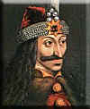

- turks -
|
. The Complete Factual History of Vampires Vlad Dracula Timeline Classic Vampire Literature Historical Vampires The Library Dracula's Birth 1430-31 Vlad Dracula was born. 1443 Dracula, now 12 and his younger brother Radu The Handsome become hostages of the Turks to guarantee the loyalty of their father who is put back on the throne of Wallanchia. 1446 Turks take Greece 1447 Dracul (beheaded) and his son Mircea (buried alive) get assassinated for complicity with the Turks. Dracula's First Brief Rein October- November 1448 Vlad Dracula, at the age of 18, obtains the Wallachian throne briefly for the first time 1453 The fall of Constantinople. |
|  |
2) He had the Turbans of visiting ambassadors nailed to their heads, when they refused to remove them in his presence. 3) He once burned a whole group of beggars alive in a barn; He justified the matter by claiming he was just eliminating a form of pestilence. 4) When a Boyar complained of the screams and stench from the impaled Turks, Dracula had the Boyar impaled as well, though on a higher stake, above all others. Dracula built a castle at the headwaters of the Argas River. It was partly destroyed by the Turks in 1462 and the Prince had to flee for his life. |
 |
These persecutions provoked a new revolutionary uprising in the Hungarian dominions of the Habsburgs. Led by Count Imre Thoekoely, the rebels won a series of victories over the forces of Emperor Leopold I. Thoekoely obtained the military support of the Turks in 1682, but in the war that followed, the emperor's armies succeeded in driving the Turks from most of Hungary. The collapse of Thoekoely's insurgent forces followed swiftly. Besides taking severe reprisals against the rebel leaders, Leopold forced the Hungarian Diet to declare the crown of Hungary forever hereditary in the house of Habsburg. |
 |
1447 Vlad II and his eldest son Mircea (who is buried alive) are murdered, possibly by Hungarian assassins. Hungary names Vlad II's successor to the Wallachian throne. 1448 The Turks do not like having a Hungarian puppet ruling Wallachia, so they decide to free Dracula and give him an army. Dracula seizes the Wallachian throne, but rules for only two months before fleeing to Moldavia, which was ruled by his cousin, Prince Bogdan. Advancing Hungarian forces may have forced him into exile; it is also possible that he did not want to be a puppet of the Turks after his imprisonment. |
A good turks site: http://www.colorq.org/MeltingPot/Asia/ChineseTurks.htm